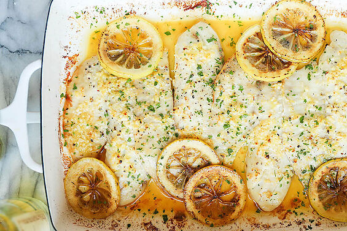

Pescado al horno con limón

Ingredientes
- 2 filetes de pescado (mojarra, tilapia o el de tu preferencia)
- Jugo de 1 limón
- 2 cucharadas de aceite de oliva
- 2 dientes de ajo picados
- Sal y pimienta al gusto
Preparación
- Precalienta el horno a 180 °C.
- Coloca los filetes en una bandeja.
- Mezcla el jugo de limón, aceite, ajo, sal y pimienta, y vierte sobre el pescado.
- Hornea 20 a 25 minutos hasta que el pescado esté bien cocido.
- Acompaña con arroz o ensalada.
Receta de Pollo
Receta de Carne
Receta Variada
Volver al inicio